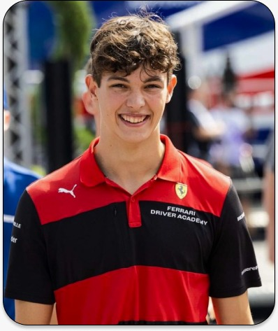
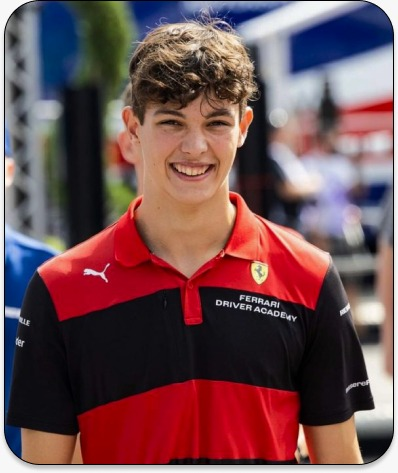

2024 Grande Prêmio da Arábia S...

2024
Australia 22 marco-24marco R3
Documentário
Da pole da F2 aos pontos na F1. Oliver Bearman ganhou as manchetes em sua primeira participação n...
Assista Agora
veja tudo sobre o gp passado